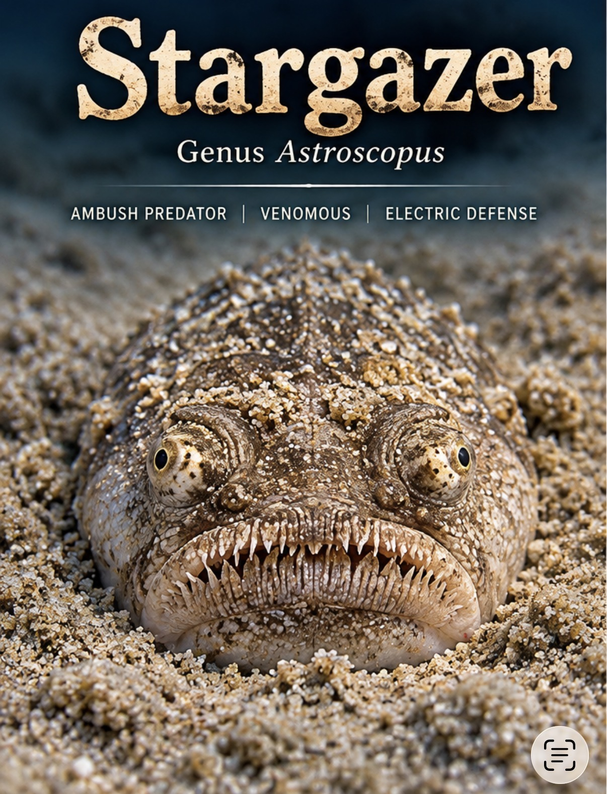
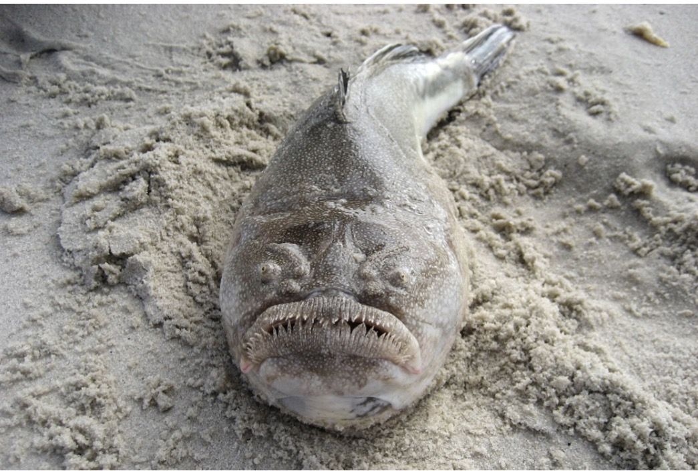
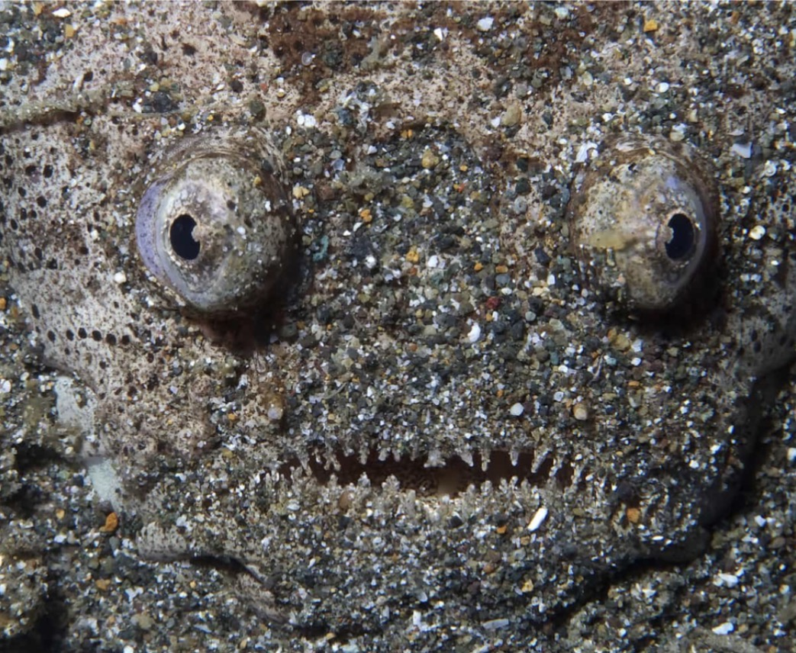
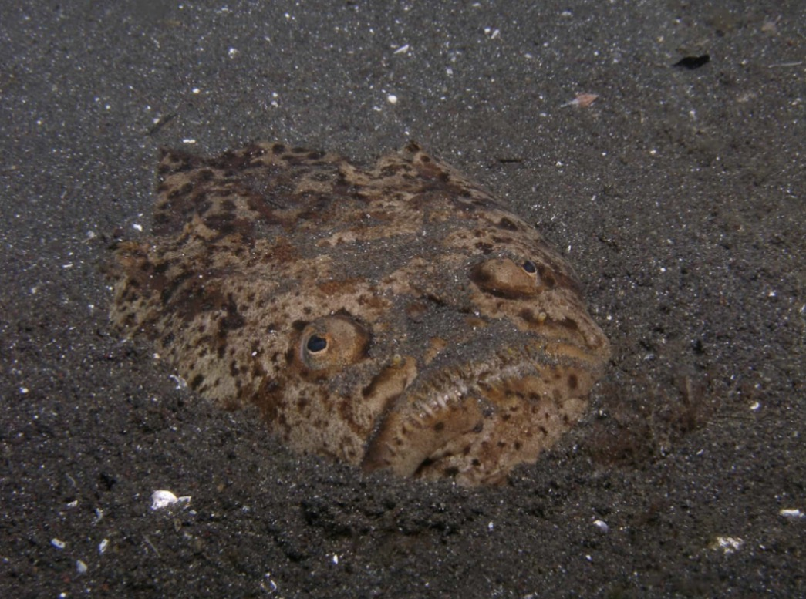
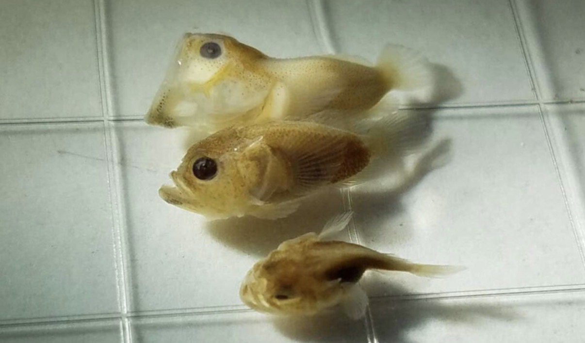

Permanent species reference derived from the October 1–7, 2026 Naturalist shift update. Illustrations are reproduced from the original shift-update image set.
Identification
Stargazers are marine fishes whose eyes and upward-facing mouths sit on top of broad heads. The family Uranoscopidae includes species from shallow and deep seas worldwide. The source introduces an Astroscopus stargazer in the aquarium's tube-anemone tank.
Sand-burial and breathing
Stargazers use strong pectoral fins to bury themselves rapidly in sediment. Their upper-head breathing openings and fringes help exclude sand while they wait for prey.
Ambush hunting
They lie hidden until a fish, small crustacean or other bottom-dwelling invertebrate comes close, then strike rapidly. Some stargazers use a worm-like oral lure.
Venom and electricity
Venomous spines occur near the gill covers. Some Astroscopus stargazers also generate electric discharges using modified eye muscles. The source describes these as defensive or predatory adaptations.
Development
Eggs laid near the seabed rise into the water column. Planktonic larvae later settle as their bodies and upward-facing eyes develop. The source compares this developmental change with flatfish.
Visitor interpretation
Look for the animal's eyes protruding above the sand and discuss ambush camouflage. Avoid handling; the spines can cause injury. Source text contributed by Michael Gilmartin and shared by Sallie.
Further reading
Source illustrations



